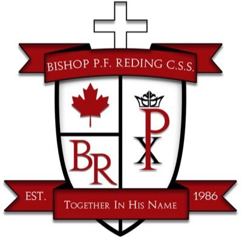
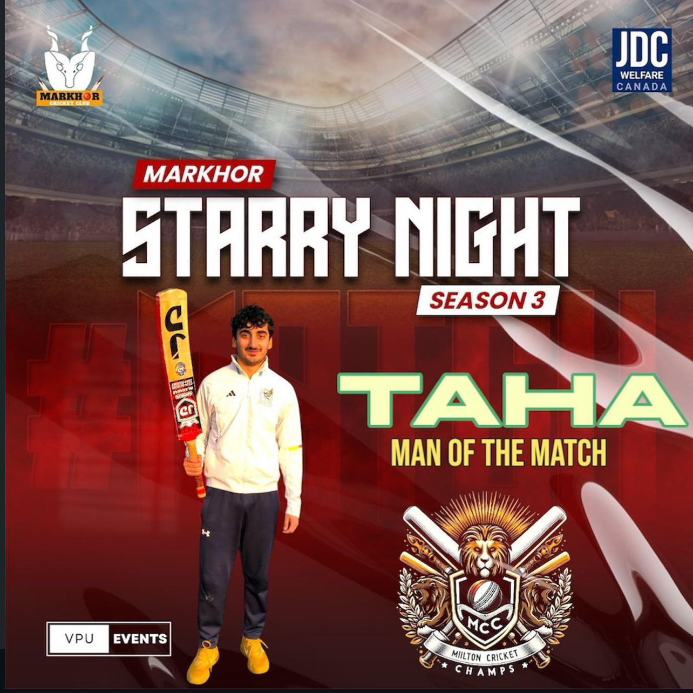
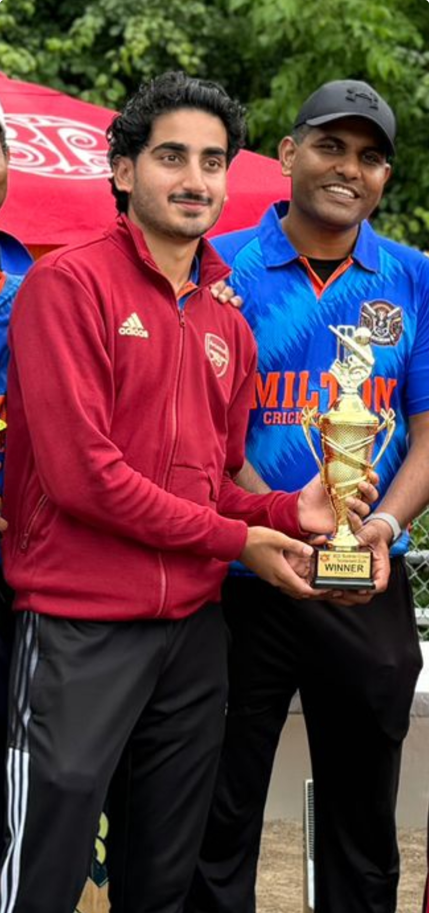
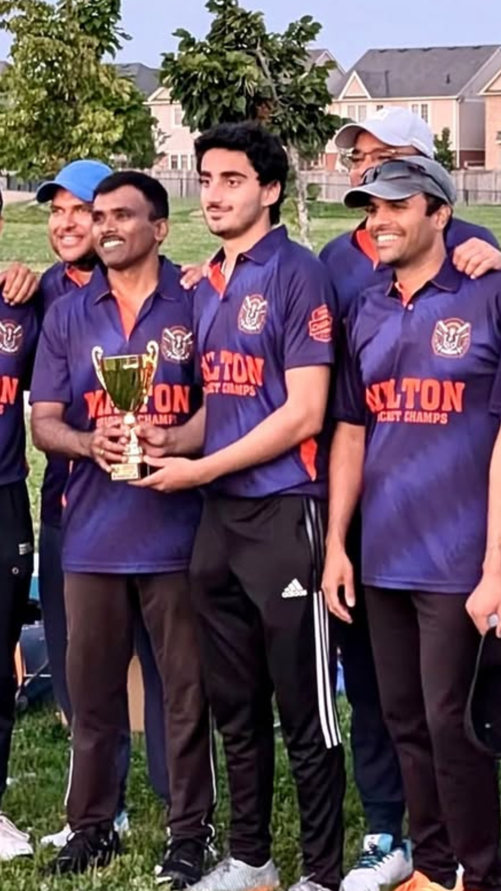
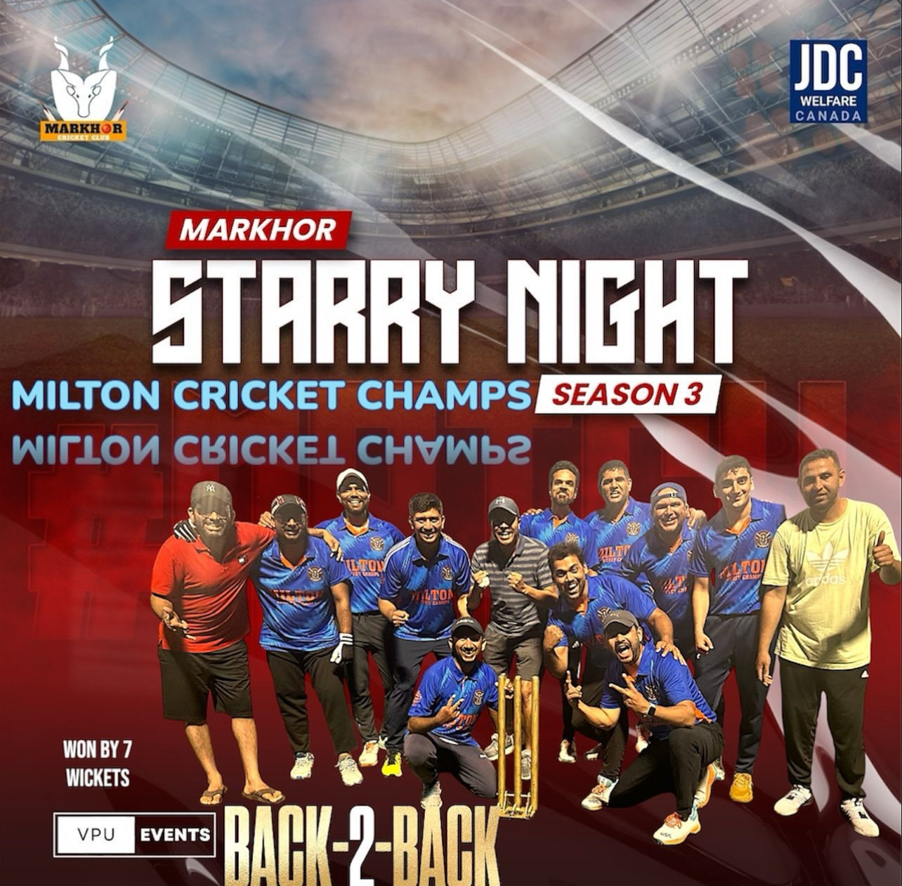

About
I’m Taha. I’m in my fourth year of computer science at the University of Guelph, and I’ve spent the last four years doing two things at once: learning to build software, and learning to run things that can’t afford to break.
That second part started as a retail job and turned into managing a 20-person department. It taught me more about shipping than any course did — that a system nobody can operate is a system that failed, and that the interesting problems usually live in the gap between what a tool does and what a person actually needs from it. The same instinct runs through everything below.
-
2019
First website, built from nothing
HTML and CSS, no framework, no idea what I was doing. It worked, and that was the hook.
-
2021
JavaScript and React
Interfaces that respond to people. First real projects with state, components and things that break in interesting ways.
-
2022
Python, and the first bots
Automation, chat assistants, small scripts that saved someone an hour a week. Also the year I started teaching kids to code.
-
2023
Working inside real systems
WordPress builds for a medical billing company, then enterprise tooling — SAP, GitHub, collaborative workflows on code other people depend on.
-
2024–26
Models, research and responsibility
An AI internship, genomics research at Guelph, a 20-person team to run, and EduPro shipped end to end.
Bar length shows how long each role ran, measured against everything since December 2021.
Leading a 20+ person team: schedules, training, shrink reduction and inventory flow through SAP and BOSS.
Biotechnology research: genome-wide association studies with PLINK and TASSEL, analysing genotype–phenotype data for SNP–trait associations.
Ran the SAP-based backend inventory system, rebuilt tracking workflows and monitored refrigeration and HVAC alarms on MT Alliance V8.
Built and tuned models for monitoring network performance, with Python, scikit-learn and a pile of automation scripts.
Responsive medical platforms in WordPress, HTML, CSS and JavaScript. API integrations and handover to their UI team.
Where it started. Stocking, training new staff, and learning how a store actually runs at 5am.
Taught coding fundamentals in Scratch, Roblox Studio and Unity, plus workshops on robotics and 3D design.

University of Guelph
BSc Computer Science — 2023 to now, fourth year.

Bishop P. F. Reding
High school diploma — 2019 to 2023.

Cambridge International
O Levels — 2018 to 2021.

Top-order batter, medium-fast bowler
Tape-ball and T20, for MCC, Markhor Royals and OCA. Power hitting, line and length, and the field awareness to know which one the over calls for.
The discipline and decision-making are the same ones I bring to engineering — which is the honest reason this tab exists.
Moments worth keeping
- Two hat-tricks in the same year, 2024.
- Anchored a run chase with 28 not out off 15, then defended the final two overs.
- Opened the bowling in a league semifinal: two powerplay wickets at 5.8 an over.
- Organised the team’s in-semester training blocks — nets plus speed and agility.




That’s the background.
The work itself makes a better argument than any of it.